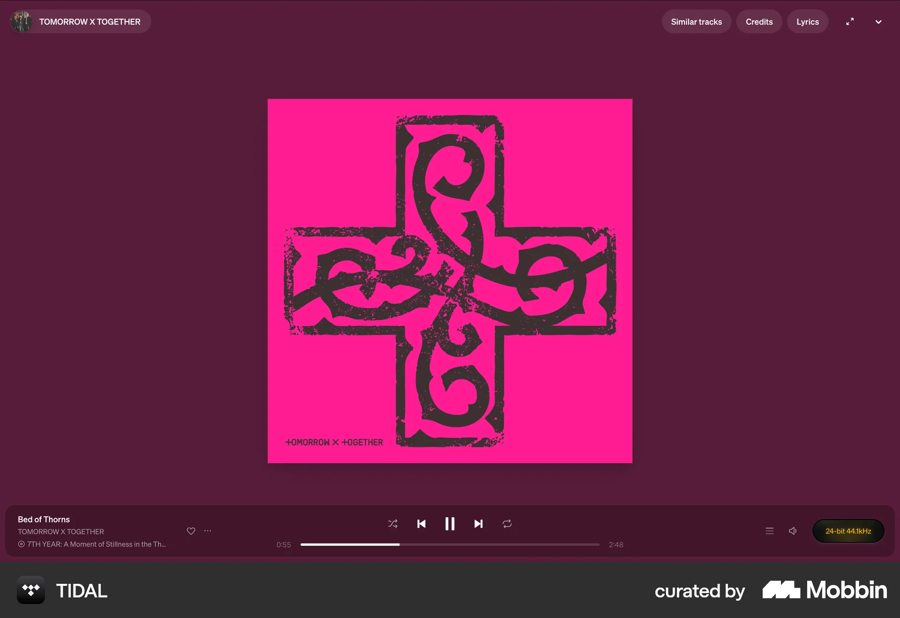
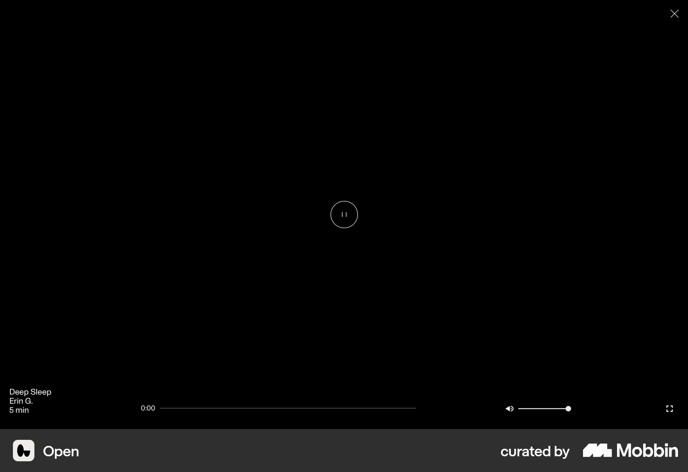
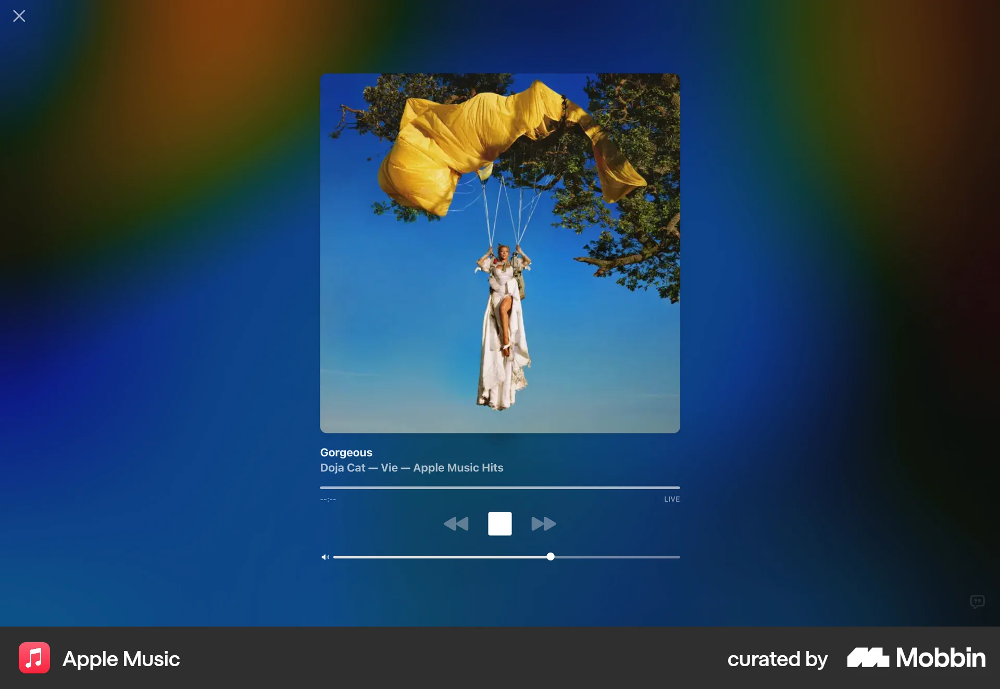

TIDAL
Art remains central; controls anchored to the edge. Reject its saturated magenta palette.
Reference
창밖 도시와 밀키는 원본 유지. 차콜 벽, 검정 가죽, 어두운 석재와 절제된 조명을 적용합니다.
원본 백업: backup/original-interior-20260930 · Studio 원격 동기화는 프로젝트 미연결로 보류.
Art remains central; controls anchored to the edge. Reject its saturated magenta palette.
Reference
Near-black immersive canvas with small white controls. Keep the room visible instead of a blank black canvas.
Reference
Artwork has visual priority over transport controls. Reject animated saturated ambient UI colors.
Reference
Inspected theme designContext: dark surface #090909, muted #a4a4a4, border #242424. Adopt neutral charcoal family; keep existing Space Grotesk, JetBrains Mono and Milky branding. Apache-2.0 upstream; no theme source installed.
ReferenceInspected full source and demo: restrained dark surface, continuous outline, focus labels. No code copied; React, Motion and Hugeicons dependencies not needed. License not provided.
ReferenceInspected full source/demo: neutral dark tray, reduced-motion handling, active state indicators. Preserve existing controls, reject icon bounce/magnification. No code copied; React and framer-motion unnecessary. License not provided.
Reference낮·밤 실내 이미지를 별도 생성하고 원본 도시 위에 실내 마스크로 배치했습니다. 밀키와 원본 계절 이미지는 변경하지 않았습니다. 겨울 트리는 보존합니다.
생성 이미지 자체는 검토했습니다. Chrome 자동화 연결은 codex app-server 실행 파일 누락 오류로 실패하여 실제 화면 검증은 미완료입니다. Studio 원격 동기화 역시 프로젝트 미연결로 보류입니다.
자동화 테스트 161개, TypeScript 검사와 Vite 빌드 통과. 원본 이미지 92개가 백업 커밋과 동일함을 확인했습니다.